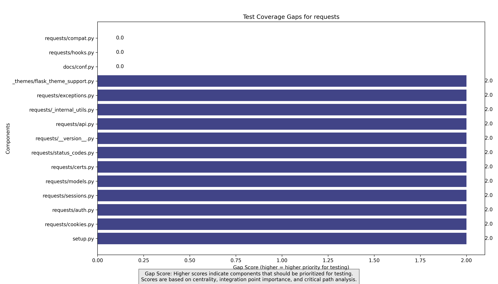

Repository: requests
Generated on: 2025-04-08 06:12:58
The 'requests' project is a Python library designed for making HTTP requests simpler and more human-friendly. It provides a user-friendly interface for sending HTTP requests and handling responses, making it a popular choice among developers.
The project consists of 36 components with a clear separation between source code and tests. The absence of dependencies indicates a modular design, but the lack of integration points suggests that components may not be interacting as expected. The test coverage is currently at 42.86%, indicating significant areas that require additional testing.
The following integration points were identified in the codebase:
| Source Component | Target Component | Type | Importance | Explanation |
|---|
The following components have the largest test coverage gaps and should be prioritized for testing:
A hybrid approach is recommended, combining bottom-up and top-down testing. Start with unit tests for individual components and gradually integrate them into higher-level tests to ensure overall functionality.
Currently, there are no defined critical paths due to the lack of integration points. However, the components identified as high-risk should be prioritized for testing to mitigate potential failures in production.
| Component | Priority | Complexity | Test Types | Rationale |
|---|---|---|---|---|
| setup.py | High (5) | 2 | unit | Setup scripts are crucial for the installation and configuration of the library. Testing ensures that dependencies are correctly specified. |
| src/requests/cookies.py | High (4) | 3 | unit integration | Cookies management is essential for maintaining session state in HTTP requests. |
| src/requests/auth.py | High (4) | 3 | unit integration | Authentication mechanisms are critical for secure API interactions. |
| src/requests/sessions.py | High (4) | 3 | unit integration | Session management is vital for maintaining state across multiple requests. |
| src/requests/models.py | Medium (3) | 2 | unit | Models define the structure of data being handled, and testing ensures data integrity. |
| Component | Suggested Approach | Test Data Requirements | Mocking Targets |
|---|---|---|---|
| setup.py | Run tests to verify that the package installs correctly in different environments. | No specific requirements | No mocking needed |
| src/requests/cookies.py | Create tests that simulate cookie handling in various scenarios, including expiration and persistence. | sample cookies session data | http client |
| src/requests/auth.py | Test various authentication methods (e.g., Basic, OAuth) to ensure they work as expected. | valid credentials invalid credentials | authentication service |
| src/requests/sessions.py | Simulate multiple requests using a session object to verify state persistence. | session data request history | http client |
| src/requests/models.py | Create tests to validate model attributes and behaviors. | sample data | No mocking needed |
Total estimated effort: 10 person-days (approximately 2.0 weeks).
Focus on increasing unit test coverage for high-risk components first, followed by integration tests that cover interactions between components. Utilize mocking where necessary to isolate tests and ensure reliability.